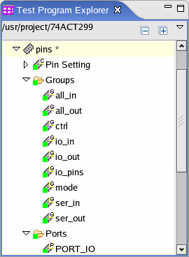

Applying pin configuration data
Unlike all the other setup windows, you download pin configuration data by clicking the Apply button.
Before you begin
Make sure you have modified the pin configuration data. The Square State Indicator becomes yellow which means that the data in the setup editor is different from the data in the hardware.
Procedure
Results
The Square State Indicator becomes green which means that the data has been downloaded to the hardware.
The Asterisk State Indicator appears after the pin configuration file name as shown in the figure below. That means the pin configuration file is not consistent with the data in the hardware.

What to do next
Save the pin configuration file.
Functional changes
- Introduced before SmarTest 6.3.2